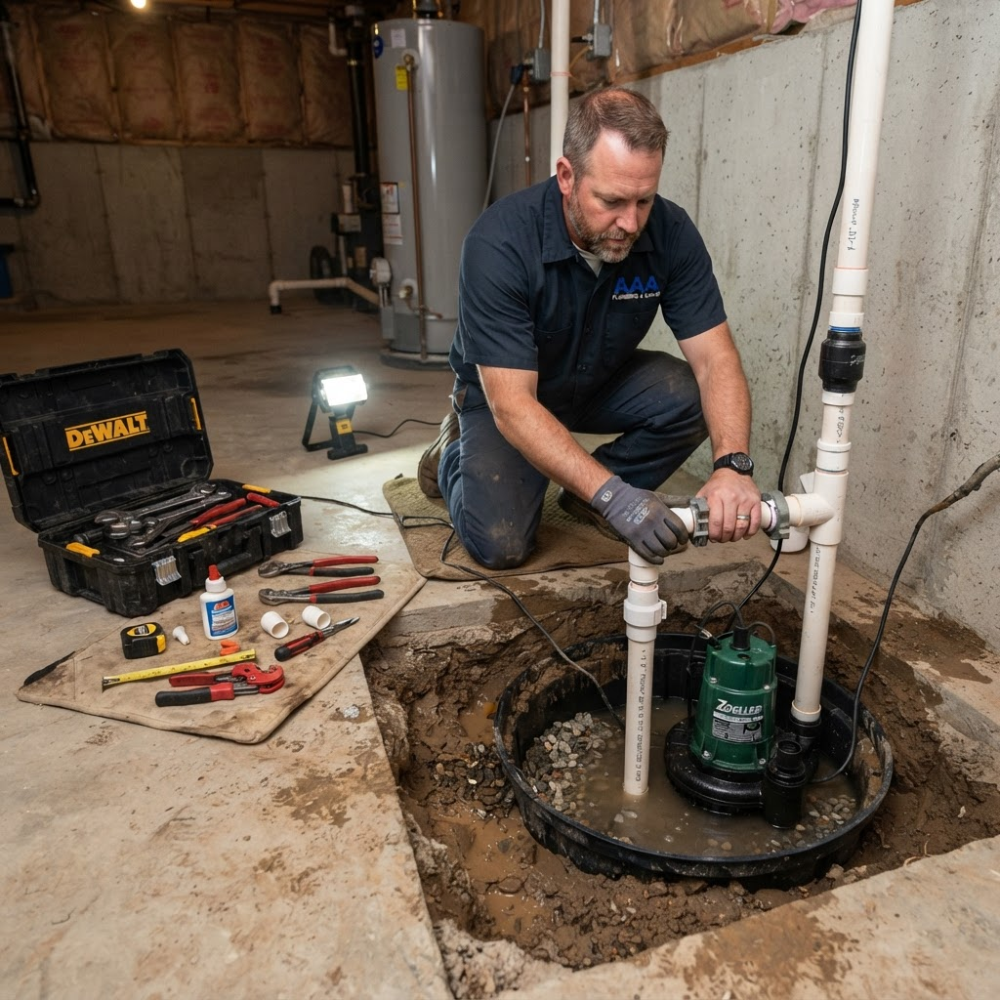

Sump Pump Installation in Chadron, NE
Protect your basement and foundation from water damage with professional sump pump installation, replacement, and repair in Chadron and surrounding northwest Nebraska communities.
Keep Your Basement Dry Year-Round
Spring snowmelt and heavy rain can push groundwater toward your home's foundation. Without a properly functioning sump pump, that water finds its way into your basement, causing damage to flooring, walls, insulation, and stored belongings. Sump pump installation in Chadron, NE gives your home a reliable first line of defense against water intrusion before it becomes a costly restoration project.
We install submersible and pedestal sump pumps for new and existing homes, replace aging units that have worn out, and add battery backup systems so the pump continues working even during a power outage. Every installation is sized correctly for the pit dimensions and expected water volume, and we test thoroughly before leaving to confirm everything is working as intended. If your existing pump is cycling too frequently, running continuously, or failing to keep up during wet weather, we can diagnose the problem and recommend the best path forward.
Schedule an Installation
Our Sump Pump Services
New Pump Installation
We install submersible and pedestal sump pumps correctly sized for your pit and expected groundwater load, with full testing before we leave.
Pump Replacement
If your existing sump pump is aging, noisy, or struggling to keep up, we replace it with a reliable unit matched to your home's drainage needs.
Battery Backup Systems
We install battery backup sump pumps that activate automatically when your primary pump fails or the power goes out during a storm.
Common Questions About Sump Pump Installation
Signs you may need a sump pump include a damp or wet basement, water stains on basement walls or floors, mold or musty odors below grade, or a home in a low-lying area prone to seasonal flooding. If you are unsure, we can inspect your basement and give you an honest recommendation.
Most sump pumps last between 7 and 10 years with proper care. Pumps that run frequently due to high groundwater may wear out faster. If your pump is more than 8 years old or you notice warning signs like unusual sounds, vibration, or slow response, it is a good time to have it evaluated.
Yes. We can add a battery backup unit to most existing sump pump setups. The backup activates automatically when the primary pump fails or the power is cut, which is exactly when flooding risk peaks during storms. We recommend backup systems for any home where basement flooding would cause significant damage.
Yes. We inspect, repair, and replace sump pumps regardless of who installed them. If your pump is malfunctioning, we will assess the unit, identify the problem, and give you clear options for repair or replacement.
Protect your basement from flooding.
Call now to schedule sump pump installation, replacement, or backup system setup in Chadron and northwest Nebraska.